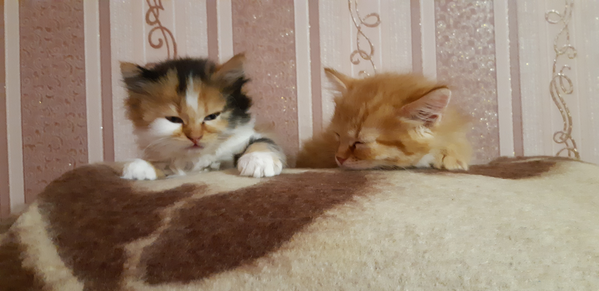

Рік - Володар дивана
Опис
Рік - це кіт, який досяг абсолютного дзена в мистецтві лежання. Його стиль життя можна охарактеризувати трьома словами: їсти, спати, ігнорувати.
Цей кіт має дар абсолютного спокою. Він може годинами лежати на одному місці, не подаючи ознак життя, але варто відкрити холодильник - він телепортується до їжі. Вам може здатися, що він дуже пухнастий, але не дайте йому вас обдурити, насправді він просто жирний. Ви це зрозумієте, коли спробуєте його вперше взяти на руки.
Фізичні характеристики:
- Вага: значна
- Улюблена їжа: будь-яка, що поміститься в пащу
- Здатність прикидатися маленьким: відсутня
- Любов до м'яких поверхонь: абсолютна
Ася - Дослідниця
Опис
Ця кішка - енергетична буря! Ніколи не сидить на місці. На відміну від першого екземпляра, цей кіт не може перебувати у стані спокою довше 10 секунд.
Ася живе у стані вічної бойової готовності. Ворог може бути будь-де, особливо в порожній кімнаті. Будь-який раптовий рух у її полі зору автоматично перетворюється на ціль.
Хочете знати яка вона була в дитинстві? Ну добре... тиць сюди.
Фізичні характеристики:
- Розмір: компактний, але дуже гнучкий
- Вага: недостатня для пробиття дверей, але достатня для шумного приземлення
- Слух: суперчутливий, особливо до звуку відкриття пачки корму
- Максимальна висота падіння без втрати гідності: 3 метри
Історія
Ці двоє були підібрані мною на вулиці. З того часу наше спільне життя важко назвати нудним. На наступному зображенні можна побачити схильність Ріка до сну, а Асі до спостережливості.
Часті питання
-
Хто Я?
Якщо ви тут, то ймовірно, що ви не кіт, на жаль. Співчуваю...
-
Де Я?
Ви тут, дякую за запитання.
-
Чому Рік товстий?
Тому що багато їсть.